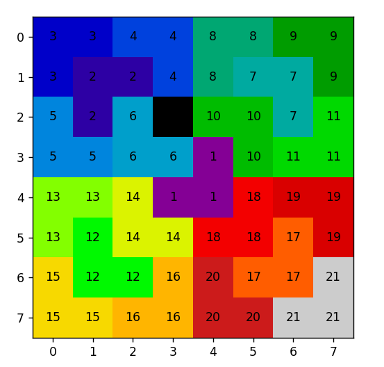

Visual Inductive Proof
Overview
A visual representation using Matplotlib to illustrate a proof by induction for the statement: "Prove that for any 2^n by 2^n grid with any one square removed, a number of L-shaped triominoes can be made to cover the entire board."
Impetus
For an assignment for my discrete math class, I was asked to prove the aforementioned statement. After crafting the inductive proof, I realized that it would be fun to write a visualization for it in Python. After writing the script and showing my professor, he asked me to join his research project on Steiner Triple Systems. This introduced me to a field of mathematics with which I had little experience at the time, but I have grown to love.
- Interest in combinatorial mathematics and visual proofs.
- Desire to create an visualization tool for understanding my inductive proof.
- Challenge of translating abstract mathematical concepts into visual representations.
Usage & Output
Running the Python script, the user will be prompted to enter a number for the size of the grid. Then, the user will be prompted to enter the row and column number for the empty block.
- **Usage**: Run the Python script to generate visual proofs for different values of n, row and column.
- **Output**: Matplotlib visualization showing the grid generated using my inductive proof, labeled to indicated the order in which the triominoes were placed into the grid.

Skills Developed & Applied
- **Python Programming**: Enhanced proficiency in Python, particularly with libraries like Matplotlib.
- **Mathematical Reasoning**: Deepened understanding of inductive proofs and combinatorial mathematics.
- **Data Visualization**: Improved skills in creating clear and informative visual representations of complex concepts.
- **Problem-Solving**: Applied logical reasoning to translate mathematical theory into executable code.